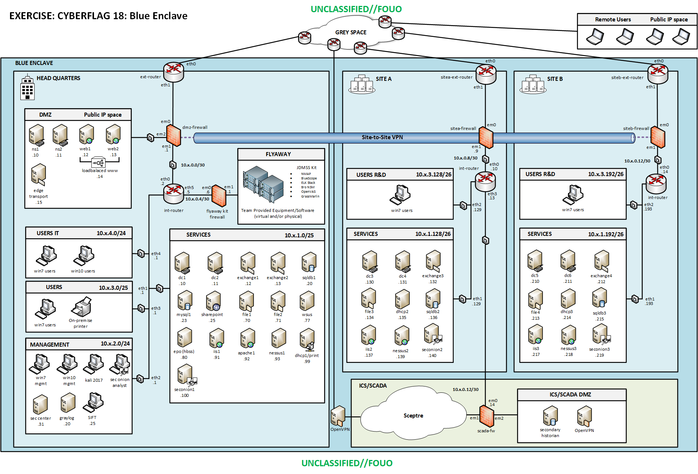

<!--
Crucible
Copyright 2020 Carnegie Mellon University.
NO WARRANTY. THIS CARNEGIE MELLON UNIVERSITY AND SOFTWARE ENGINEERING INSTITUTE MATERIAL IS FURNISHED ON AN "AS-IS" BASIS. CARNEGIE MELLON UNIVERSITY MAKES NO WARRANTIES OF ANY KIND, EITHER EXPRESSED OR IMPLIED, AS TO ANY MATTER INCLUDING, BUT NOT LIMITED TO, WARRANTY OF FITNESS FOR PURPOSE OR MERCHANTABILITY, EXCLUSIVITY, OR RESULTS OBTAINED FROM USE OF THE MATERIAL. CARNEGIE MELLON UNIVERSITY DOES NOT MAKE ANY WARRANTY OF ANY KIND WITH RESPECT TO FREEDOM FROM PATENT, TRADEMARK, OR COPYRIGHT INFRINGEMENT.
Released under a MIT (SEI)-style license, please see license.txt or contact permission@sei.cmu.edu for full terms.
[DISTRIBUTION STATEMENT A] This material has been approved for public release and unlimited distribution.  Please see Copyright notice for non-US Government use and distribution.
Carnegie Mellon(R) and CERT(R) are registered in the U.S. Patent and Trademark Office by Carnegie Mellon University.
DM20-0181
-->

<!DOCTYPE html>
<html>

<body>



<map name="map">
<!-- #$-:Image map file created by GIMP Image Map plug-in -->
<!-- #$-:GIMP Image Map plug-in by Maurits Rijk -->
<!-- #$-:Please do not edit lines starting with "#$" -->
<!-- #$VERSION:2.3 -->
<!-- #$AUTHOR:schlackman -->
<area shape="rect" coords="72,333,126,399" href="http://s3-vm-web.cs2.cert.org/views/453d394e-bf18-499b-9786-149b0f8d69ec/vms/S3-VM1/console" />
<area shape="rect" coords="136,333,191,401" href="http://s3-vm-web.cs2.cert.org/views/453d394e-bf18-499b-9786-149b0f8d69ec/vms/S3-VM2/console" />
</map>

</body>
</html>
